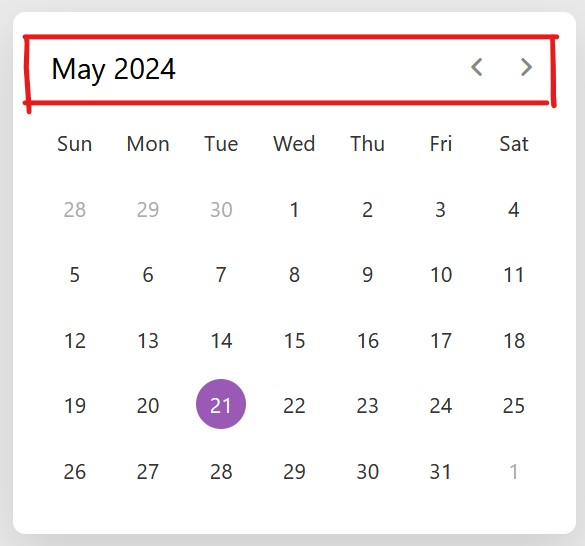
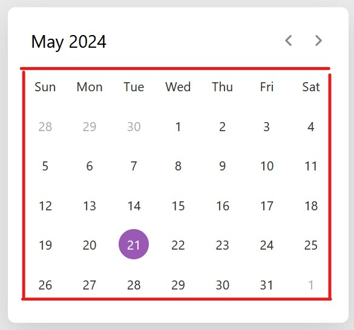

1: Add the external icon link to the HTML head
<link rel="stylesheet" href="https://fonts.googleapis.com/css2?family=Material+Symbols+Rounded:opsz,wght,FILL,GRAD@20..48,100..700,0..1,-50..200">
2: Create a DIV element with the class "wrapper" to encase the calendar. Add a header to the DIV and fill it with the a p tag for the current month and year, and a new DIV (class name: "icons") to hold the previous and next month icons. This formats the top of the calendar.

<header>
<p class="current-date"></p>
<div class="icons">
<span id="prev" class="material-symbols-rounded">chevron_left</span>
<span id="next" class="material-symbols-rounded">chevron_right</span>
</div>
</header>
3: Create a Calendar DIV inside the Wrapper DIV and create a list with the week abbreviations. Under that list, create a new unordered list with with the class "days" to later display days of the month.

<div class="calendar">
<ul class="weeks">
<li>Sun</li>
<li>Mon</li>
<li>Tue</li>
<li>Wed</li>
<li>Thu</li>
<li>Fri</li>
<li>Sat</li>
</ul>
<ul class="days"></ul>
</div>
4: Add the stylesheet CSS components to the calendar for formatting and display
.wrapper{
width: 450px;
background: #fff;
border-radius: 10px;
box-shadow: 0 15px 40px rgba(0,0,0,0.12);
}
.wrapper header{
display: flex;
align-items: center;
padding: 25px 30px 10px;
justify-content: space-between;
}
header .icons{
display: flex;
}
header .icons span{
height: 38px;
width: 38px;
margin: 0 1px;
cursor: pointer;
color: #878787;
text-align: center;
line-height: 38px;
font-size: 1.9rem;
user-select: none;
border-radius: 50%;
}
.icons span:last-child{
margin-right: -10px;
}
header .icons span:hover{
background: #f2f2f2;
}
header .current-date{
font-size: 1.45rem;
font-weight: 500;
}
.calendar{
padding: 20px;
}
.calendar ul{
display: flex;
flex-wrap: wrap;
list-style: none;
text-align: center;
}
.calendar .days{
margin-bottom: 20px;
}
.calendar li{
color: #333;
width: calc(100% / 7);
font-size: 1.07rem;
}
.calendar .weeks li{
font-weight: 500;
cursor: default;
}
.calendar .days li{
z-index: 1;
cursor: pointer;
position: relative;
margin-top: 30px;
}
.days li.inactive{
color: #aaa;
}
.days li.active{
color: #fff;
}
.days li::before{
position: absolute;
content: "";
left: 50%;
top: 50%;
height: 40px;
width: 40px;
z-index: -1;
border-radius: 50%;
transform: translate(-50%, -50%);
}
.days li.active::before{
background: #9B59B6;
}
.days li:not(.active):hover::before{
background: #f2f2f2;
}
5: Make the current date updated in external JS. This also formats the month to be accurately displayed with the current dates.
const daysTag = document.querySelector(".days"),
currentDate = document.querySelector(".current-date"),
prevNextIcon = document.querySelectorAll(".icons span");
// getting new date, current year and month
let date = new Date(),
currYear = date.getFullYear(),
currMonth = date.getMonth();
// storing full name of all months in array
const months = ["January", "February", "March", "April", "May", "June", "July",
"August", "September", "October", "November", "December"];
const renderCalendar = () => {
let firstDayofMonth = new Date(currYear, currMonth, 1).getDay(), // first day of month
lastDateofMonth = new Date(currYear, currMonth + 1, 0).getDate(), // last date of month
lastDayofMonth = new Date(currYear, currMonth, lastDateofMonth).getDay(), // last day of month
lastDateofLastMonth = new Date(currYear, currMonth, 0).getDate(); // last date of prior month
let liTag = "";
for (let i = firstDayofMonth; i > 0; i--) { // li of prior month last days
liTag += `<li class="inactive">${lastDateofLastMonth - i + 1}</li>`;
}
for (let i = 1; i <= lastDateofMonth; i++) { // making li of all days of current month
// adding active class to li if the current day, month, and year matched
let isToday = i === date.getDate() && currMonth === new Date().getMonth()
&& currYear === new Date().getFullYear() ? "active" : "";
liTag += `<li class="${isToday}">${i}</li>`;
}
for (let i = lastDayofMonth; i < 6; i++) { // creating li of next month first days
liTag += `<li class="inactive">${i - lastDayofMonth + 1}</li>`;
}
currentDate.innerText = `${months[currMonth]} ${currYear}`; // passing current mon and yr as currentDate text
daysTag.innerHTML = liTag;
}
renderCalendar();
6: Use external JS to make the indicator arrows dynamic and display the previous or upcoming month when interacted with.
prevNextIcon.forEach(icon => { // prev and next icons
icon.addEventListener("click", () => { // adding click event
// if clicked icon is previous icon then decrement current month by 1 else increment it by 1
currMonth = icon.id === "prev" ? currMonth - 1 : currMonth + 1;
if(currMonth < 0 || currMonth > 11) { // if current month is less than 0 or greater than 11
// creating a new date of current year & month and pass it as date value
date = new Date(currYear, currMonth, new Date().getDate());
currYear = date.getFullYear(); // updating current year with new date year
currMonth = date.getMonth(); // updating current month with new date month
} else {
date = new Date(); // pass the current date as date value
}
renderCalendar(); // calling renderCalendar function
});
});
- Sun
- Mon
- Tue
- Wed
- Thu
- Fri
- Sat